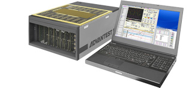
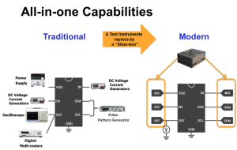

By Anthony Lum, Business Development Manager, Advantest America, Inc.
Figure 1
The Internet of Things (IoT) is one the most ubiquitous technology-related topics these days. It’s become one of the tech buzzwords that transcend discussion in trade publications and blogs, showing up regularly in consumer and business publications as speculation swirls about when, where and to what extent IoT products are being deployed. Currently, the broadest applications for IoT solutions are automotive environments, from which myriad products can be launched and controlled, and household uses, including appliances, lighting and environment controls.
In the semiconductor world, analog integrated circuits (ICs) represent a key aspect of IoT. The need for analog ICs has increased in near direct proportion to the number of smart wireless devices on the market. With IoT device volumes expected to top these numbers, analog ICs will play an even more critically important role due to the higher performance, tighter accuracy and longer reliability that IoT devices require. In addition, analog ICs are essential to the rapid device characterization and fast delivery of customer samples the engineering community demands.
R&D engineers previously addressed these challenges by employing classic rack-and-stack or PXI benchtop instrumentation. These solutions were the best fit because of their broad technical reach. However, time-perishable deliverables proved extremely challenging because R&D engineers faced the additional task of developing system software to control and integrate the non-automated benchtop solutions. This undertaking requires strong coding skills and a more comprehensive knowledge of each of the benchtop instruments’ operation than the engineers typically possess. Manual measurement, on the other hand, is cumbersome and hampers rapid turnaround of deliverables.
{kind=link}
One solution that addresses this range of challenges is Advantest’s EVA100 measurement system, whose step-function integration is a significant improvement over classic benchtop instruments. The EVA100’s “all-in-one” concept integrates functions for a hose of instrumentation – power supplies, 4-quadrant DC signal measurement units, pattern generators, logic analyzers, arbitrary waveform generators, digitizers and oscilloscopes – into a single, modular unit. Each of these functions replaces standalone, focused instruments necessary to perform comprehensive evaluation and measurement of linear, automotive and industrial devices. Figure 2 shows how the EVA100 greatly simplifies analog IC device setup and replaces the need for six standalone, classic, benchtop instruments.
The “all-in-one” EVA100, also nicknamed the “shoe-box,” has a small footprint and is lightweight, portable and runs on standard 120V AC – all of which facilitates moving the unit from desktop to desktop, or into the lab as needed. The same hardware and setup can be preserved at any measurement station or node, assuring data acquisition consistency and correlation.
Rapid turnaround can be inhibited by development of complex software. Historically an underscoped task that tends to takes longer than expected to complete, software development is also complex and depends on users’ experience and comfort level. Software development is not needed with the EVA100, thanks to its newly developed, highly intuitive software GUI. With its drag-and-drop operation, the software interface enables engineers to quickly and easily create device-focused measurement set-ups. Automatic report functions dramatically improve deskwork efficiency, providing clear documentation and data ready for publishing in device data sheets.
The EVA100 combines Advantest’s unparalleled ATE and benchtop expertise to synergistically deliver a benchtop-measurement system that is fully modular and delivers benchtop-accuracy hardware along with intuitive GUI software delivering a complete turnkey solution. Priced competitively to benchtop instruments to ensure maximize ROI, the fully integrated EVA100 is often lower priced than an equivalent piecemeal rack or PXI instrument configuration. With software also included as part of the system’s package, the IoT-optimized EVA100 solves the two-pronged challenge of rapid device characterization and high performance quantitative data for a wide range of analog ICs.
About the Author
Anthony Lum joined Advantest America in 2006 and is currently ASD Business Development Manager. He amassed over 25 years of ATE experience specializing in RF and Analog SoC device testing through roles as a test engineer, applications engineer, and test and applications management at Texas Instruments and HP/Agilent. He received his BSEE at Arizona State University in 1986 and has authored over 20 IEEE and industry papers.
